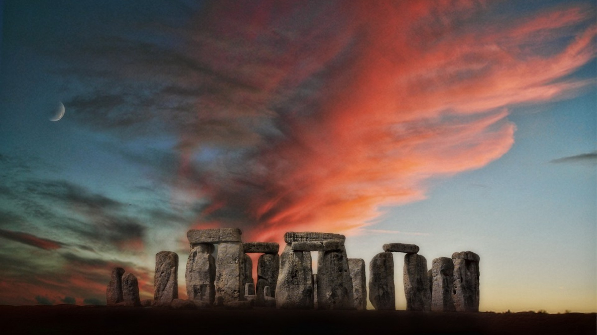

Option 2 · Sarsen Dawn
Inspired by Stonehenge at summer solstice sunrise: apricot sky, long shadows, chalk and sarsen underfoot. Brand first; willow chalk underfoot, sunrise from the right, a henge line on the ground.
Public-domain Stonehenge at sunrise. Full-bleed hero plane on the live site; shown here as the visual anchor for this option.

Stone for weight, teal horizon for cool air, honey-ember for the pulse, fern for Albion ground.
Footers, Circle chrome, ground silhouette.
Cool dawn air, section breaks, hope without lilac.
Primary CTAs and rare solstice sparks.
Quiet botanical texture - Albion undergrowth.
Willow chalk and teal horizon keep this off cream-cafe and purple-mystical defaults. Honey and ember carry the sunrise; moss and bracken root it in the ground.
Free CC0 / public-domain photographs - fern, bark, oak, hawthorn, mist, bracken - processed soft for washes.
Not from Yellow's friend's set; provenance in assets/sarsen/pagan/LICENSE.txt.
No hard page border. Sunrise enters from the right; a simplified henge silhouette holds the ground line. Keep heavy stone and bark for footers and Circle chrome - not behind long body copy.
Newsreader for brand and headlines - clear, slightly monumental. Figtree for body and UI.
Albion Faeries
light finds the gap between the stones
The Albion Faeries are part of the global Radical Faerie web - awakening, nature-loving, compassionate queers finding each other in old Albion and beyond.
Albion Faeries
What's on · Gatherings · Who we are · Get involved
Circles · Albion
Chalk wash, sarsen accent, stone texture only in the header strip.